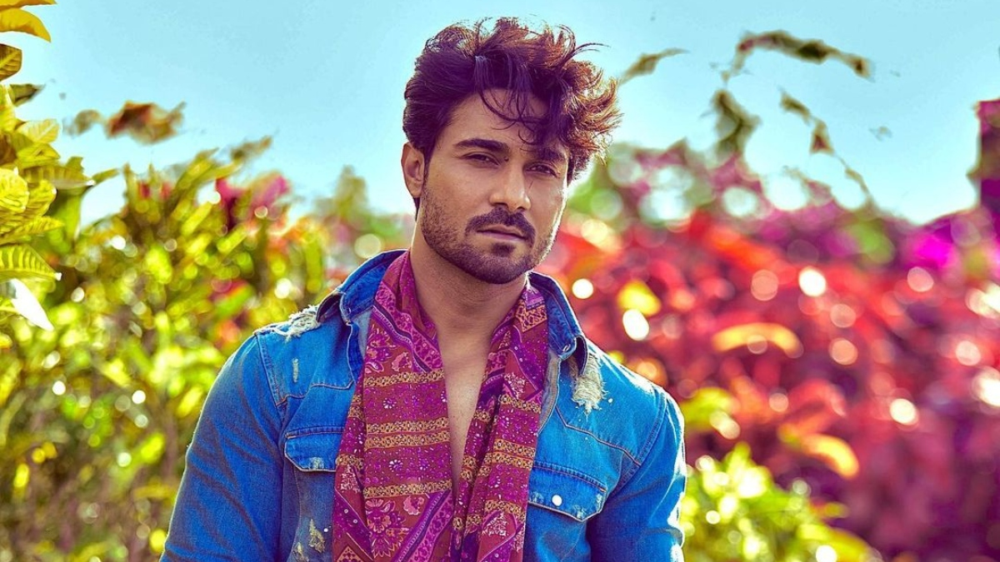
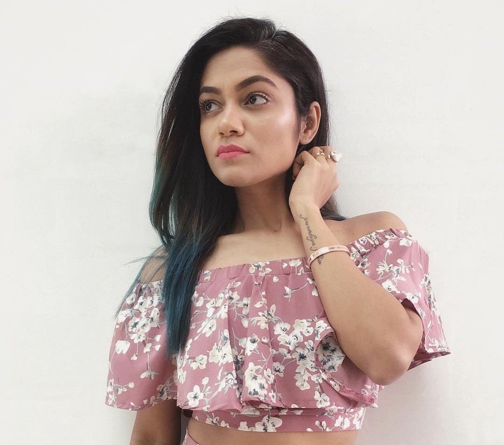

Nicole Concessao
The famous Indian dancer Nicole, who became very popular over Youtube in Bollywood songs
for her dance style. Two million subscribers have been accumulated alongside Sonal Devraj,
her colleague, to launch a Youtube channel called Team Naach.In India, she’s got a huge fan.
She’s known for her Lovely Beauty, cute smile, hot personality, and style.
Her Channel is so popular that celebrities make their film dancing videos with them.
Before becoming a dancer, Nicole is used as an agent, brand management, customer services,
Public Relations Officer. Later, she gave up her jobs because she was interested in doing
something else.She used to be active in sangeet activities, pre-wedding sessions, co-ops,
private classes, etc. in the early six months.

Salman Yusuff Khan
Khan started his career with the dance reality show Dance India Dance in its (first season).
After winning the show, Khan appeared in the title song of Wanted. He then did the music video
"Dance Of Death" for the movie Rakta Charitra and in the video Alive (2011).He appeared in the
film Sukoon - Vaishali Made.In 2013, he debuted as an actor in the 3D dance-based film ABCD: Anybody Can Dance,
which was released on 8 February 2013, directed by Remo D'Souza co-starring Prabhu Deva, Dharmesh Yelande,
Lauren Gottlieb and Punit Pathak. He later participated in Jhalak Dikhhla Jaa first as a choreographer
opposite Yana Gupta (Season 4), Isha Sharvani (Season 5) and became the winner with Drashti Dhami (Season 6)
in 2013. In 2014, he was a participant of Fear Factor: Khatron Ke Khiladi 5. He was also choreographer
in Creature 3D, Zid.
Sonali Bhadauria
Sonali Bhadauria is a popular Indian dancer, choreographer, and YouTuber.
She did BE in Computer Science from Don Bosco Institute of Technology, Mumbai
.After her graduation, she started to work as a software engineer at Infosys in Pune.
While working at Infosys, she joined a dance group ‘Crazy Legs’ composed of the
employees of the company. In 2016, she began her YouTube channel “Live To Dance with
Sonali”and began posting videos in it, while still working at Infosys.
Sonal Devraj

Sonal Devraj (born 04 September 1990) is an Indian Youtube Star and Choreographer.
She is famous for the dance skills she uploads on Team Naach Youtube.
A choreographer who is part of her friend Nicole’s duo Team Naach.
They ‘re using their software to teach the students to dance.
She earned a BMS in Studies in Management and became a Certified Management Accountant.
She is one of the Indian born Wealthiest Choreographers.